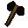
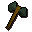

Brian's Battleaxe Bazaar.
Inventory config
battleaxeshopRun by  Brian. Open in knowledge graph →
Brian. Open in knowledge graph →
Located in: Port Sarim
Stock
| Item | Stock | Value | Sells for |
|---|---|---|---|
| 4 | 52 gp | 52 gp | |
| 3 | 182 gp | 182 gp | |
| 2 | 650 gp | 650 gp | |
 Black battleaxe | 1 | 1248 gp | 1248 gp |
| 1 | 1690 gp | 1690 gp | |
 Adamant battleaxe | 1 | 4160 gp | 4160 gp |
Shop sells at 100.0% of item value and buys at 55.0%.